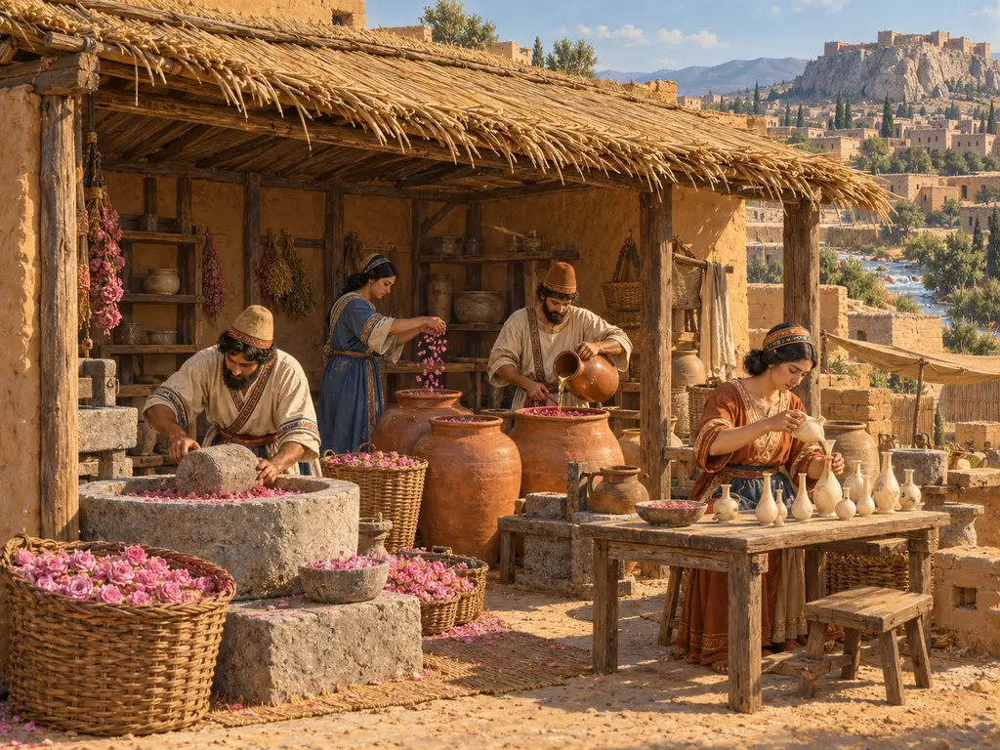
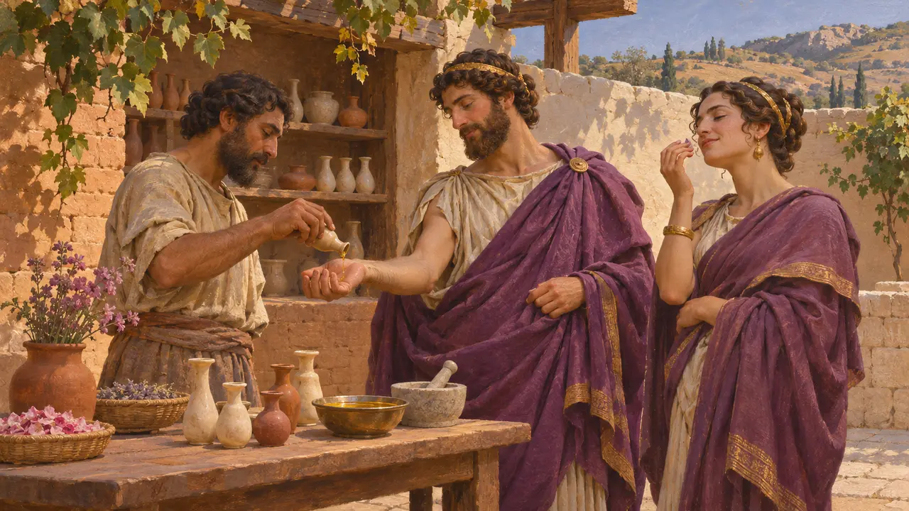
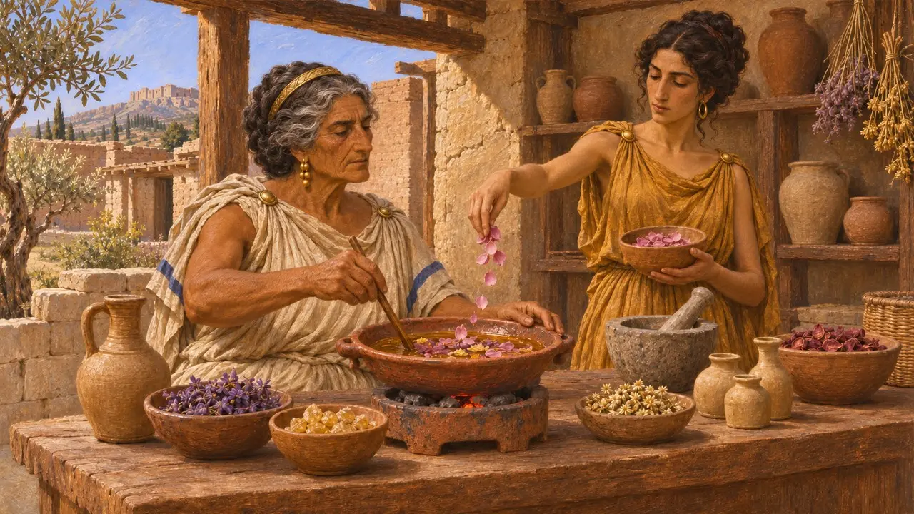
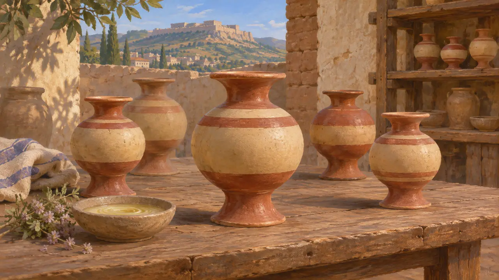
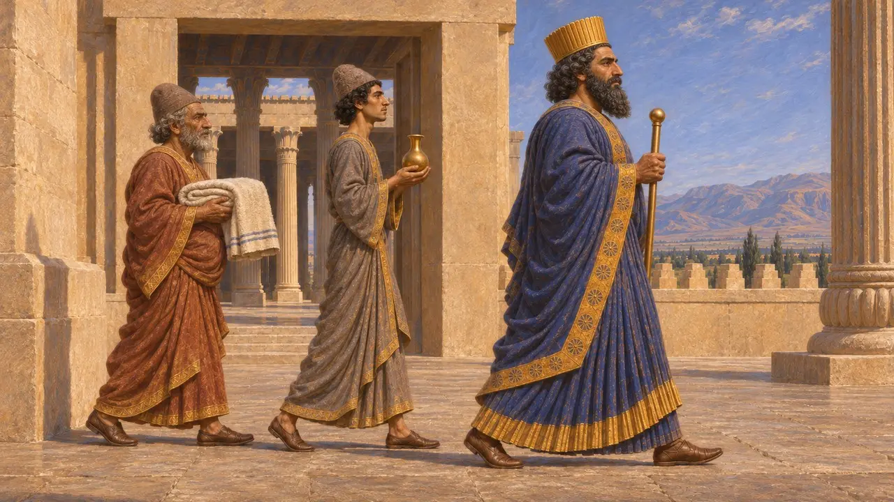
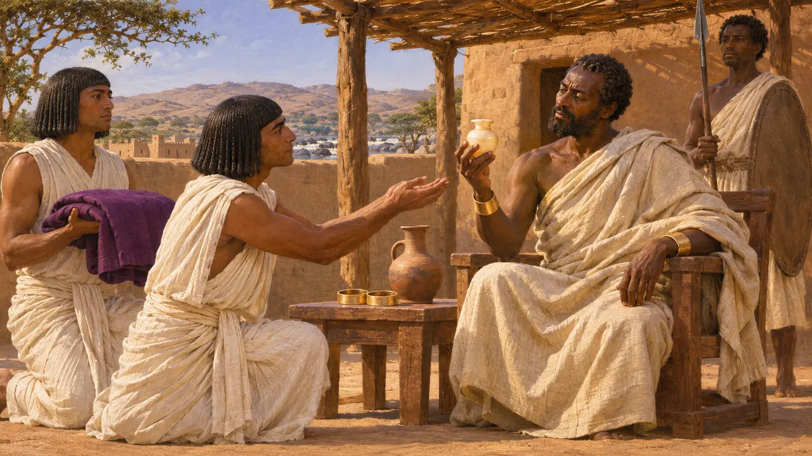

Werkstatt des Salbenmachers
Hersteller von Duftölen und Salben in Sardes, Lydien, um 500 v. Chr.
Im Spiel: Level 7: Sardes brennt
Griechische Autoren zählten duftendes Öl zu den Luxusgütern Lydiens, und manche verbanden eine lydische Salbe mit dem Namen Bakkaris. Duftöl wurde hergestellt, indem man Blüten, Gewürze und Harze in Öl einlegte. Man verwendete es für Körper und Haar und tauschte es als Geschenk zwischen Herrschern aus. Unter persischer Herrschaft war Sardes Sitz eines Satrapen, und der Handel mit feinen Ölen bestand vermutlich fort.
Im Spiel: Im Level Sardes legen Salbenmacher gepresstes Obst und Blüten in Öl ein und beziehen dafür Obst aus den Kornspeichern, um Adelssitze mit Salbe zu versorgen. Echte Salbenmacher parfümierten Öl mit Blüten, Gewürzen und Harzen, nicht allein mit Obst.

Ein lydischer Luxus
Antiker BerichtDer Dichter Xenophanes von Kolophon, der im 6. Jahrhundert v. Chr. schrieb, beklagte, seine Mitbürger hätten von den Lydern nutzlosen Luxus gelernt. Er schilderte sie in Purpurmänteln, stolz auf ihr frisiertes Haar und getränkt mit duftendem Öl. Athenaios, der viele Jahrhunderte später schrieb, überliefert diese Verse. Er erörtert auch Bakkaris, ein Wort, das manche Griechen mit lydischer Salbe verbanden, während andere es für eine Pflanze gebrauchten.
Xenophanes fr. 3, in Athenaeus, Deipnosophists 12.526a; Athenaeus, Deipnosophists 15

Wie Salben hergestellt wurden
Antiker BerichtTheophrast beschreibt um 300, wie griechische Salbenmacher arbeiteten. Zuerst behandelten sie ein Öl so, dass es Duft aufnehmen konnte. Dann legten sie Duftstoffe wie Blüten, Gewürze und Harze darin ein, manchmal unter sanfter Wärme. Sein Bericht entstand zwei Jahrhunderte nach der persischen Zeit, doch das Handwerk selbst war alt und dürfte in Lydien ähnlich ausgeübt worden sein.
Theophrastus, On Odours

Das Lydion-Gefäß
UmstrittenDie Ausgräber in Sardes haben viele Lydia gefunden, kleine runde Gefäße mit ausladendem Fuß und Rand; die Form wurde in griechischen Gebieten gehandelt und nachgeahmt. Viele Forscher vermuten wegen ihrer Größe und weiten Verbreitung, dass diese Gefäße Salbe enthielten, vielleicht Bakkaris. Ihr Inhalt ist nicht sicher nachgewiesen, daher bleibt die Verbindung zwischen dem Gefäß und dem Duftstoffhandel eine wahrscheinliche Vermutung.
E. Dusinberre, Aspects of Empire in Achaemenid Sardis, 2003

Duftöl am persischen Hof
Zeitgenössisch belegtTürreliefs im Palast des Dareios in Persepolis zeigen den König, gefolgt von Dienern, die Gegenstände für seine Person tragen, darunter ein Handtuch. Ein kleines Gefäß in der Hand eines Dieners wird oft als Fläschchen mit duftendem Öl gedeutet, doch diese Lesart bleibt eine Interpretation. Über die Herkunft solcher Öle sagen die Reliefs nichts, und Sardes ist nur eine von mehreren möglichen Quellen.
Persepolis, palace of Darius, doorway reliefs; E. F. Schmidt, Persepolis I, 1953

Duftöl als königliches Geschenk
Antiker BerichtLaut Herodot schickte Kambyses Fischesser aus Elephantine als Kundschafter zum König der Äthiopier. Zu ihren Geschenken gehörten ein Purpurgewand, Goldschmuck, Palmwein und ein Alabastergefäß mit Myrrhensalbe. Die Geschichte soll die Einfachheit der Äthiopier verdeutlichen, zeigt aber, dass die Griechen von persischen Königen erwarteten, duftende Öle als Gunstbeweis zu verschenken.
Herodotus 3.20
Quellen
- Theophrastus, On Odours
- Xenophanes fr. 3, in Athenaeus, Deipnosophists 12.526a
- Athenaeus, Deipnosophists 15
- Herodotus 3.20
- E. Dusinberre, Aspects of Empire in Achaemenid Sardis, 2003
- E. F. Schmidt, Persepolis I, 1953